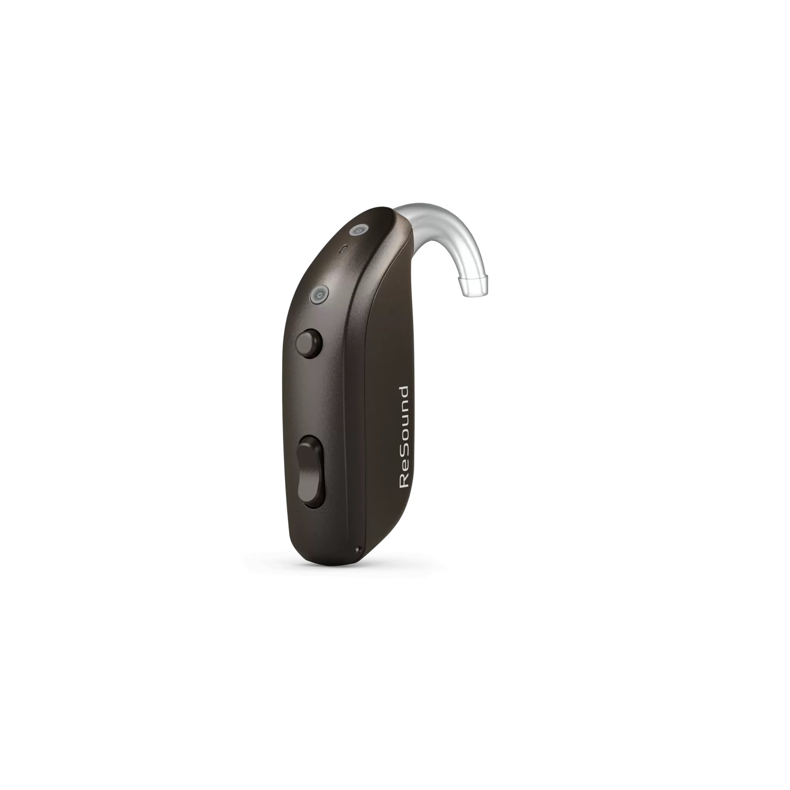
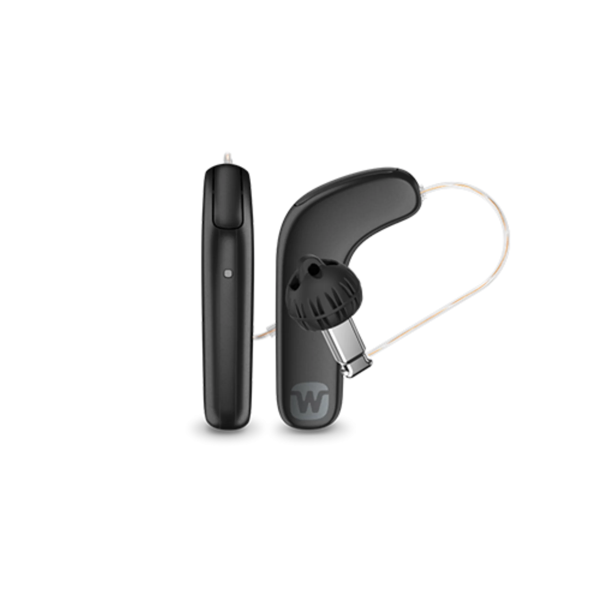
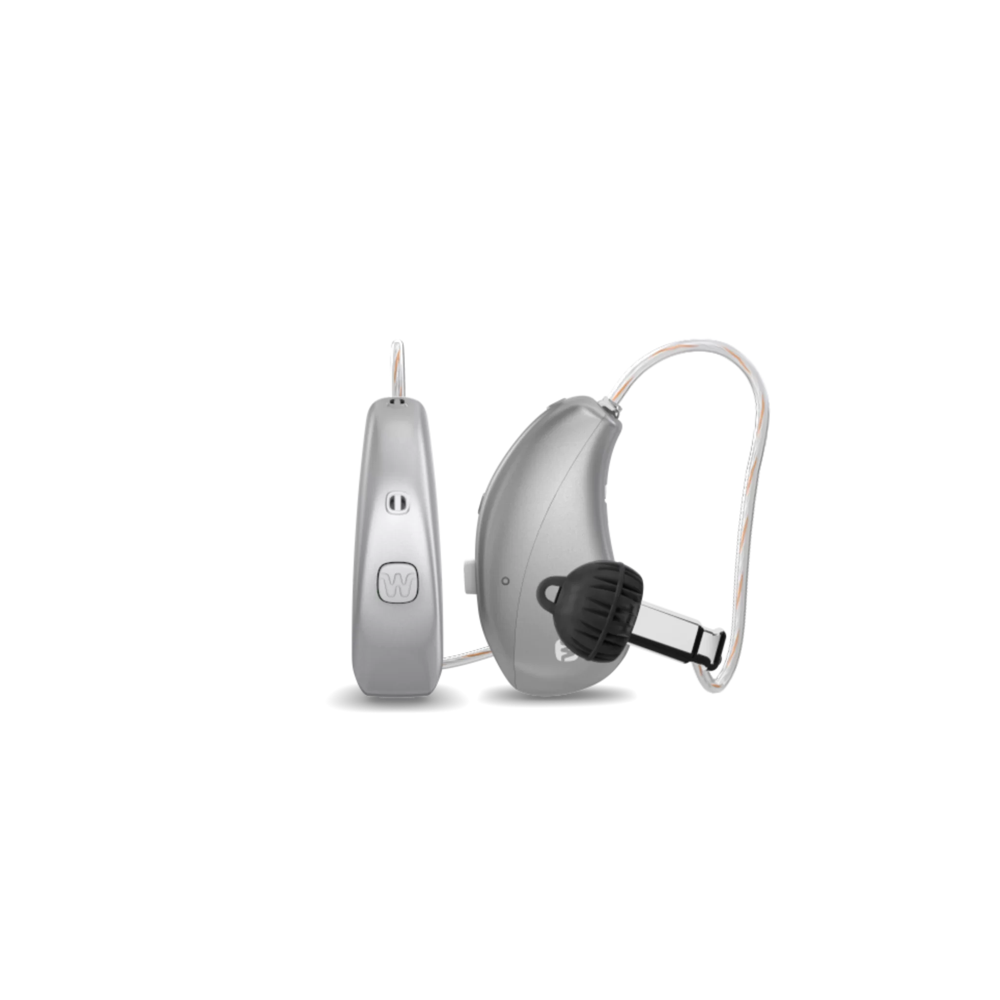

[NOME DO MODELO]

Conheça os modelos disponíveis na Black Opimed e veja quais opções podem fazer sentido para a sua necessidade auditiva e para a sua rotina.
Adaptação fonoaudiológica e acompanhamento inclusos.
Oferta válida de 01/10/2026 a 31/12/2026 ou enquanto durarem os estoques. O segundo aparelho será concedido conforme as regras da campanha. Consulte modelos participantes, disponibilidade e demais condições.
Você aumenta o volume da televisão, pede para repetir uma frase ou perde parte da conversa quando várias pessoas falam ao mesmo tempo. No restaurante, no telefone ou em um encontro de família, acompanhar tudo pode começar a exigir mais esforço.
Esses momentos ajudam a perceber onde a audição já interfere na rotina e quais situações você gostaria de voltar a acompanhar melhor.

Existem diferentes modelos, formatos e recursos. A escolha depende da necessidade auditiva, mas também de situações bem práticas. Conversar em casa, assistir à televisão, usar o telefone ou acompanhar várias pessoas falando ao mesmo tempo.
A equipe Opimed considera essas informações para apresentar os aparelhos que podem se encaixar melhor no seu uso.

[NOME DO MODELO]

[NOME DO MODELO]

[NOME DO MODELO]

[NOME DO MODELO]
[INSERIR AQUI SOMENTE OS MODELOS PARTICIPANTES VALIDADOS PELA OPIMED]
A Black Opimed acontece de 1º de outubro a 31 de dezembro. Durante a campanha, você pode conhecer os modelos participantes e entender qual opção faz sentido para a sua necessidade.
Na compra de 1 aparelho auditivo participante, o segundo é concedido conforme a condição do modelo escolhido. Modelos, disponibilidade e condições da oferta são apresentados no atendimento.
Nos primeiros dias, a televisão, uma conversa em grupo ou os sons do dia a dia podem ser percebidos de outra forma. Por isso, a Black Opimed inclui adaptação fonoaudiológica e acompanhamento, com orientação e ajustes conforme a necessidade de cada pessoa.

A Opimed atua há 37 anos em saúde auditiva. Esse histórico aparece no atendimento desde a escolha do aparelho até o período de adaptação, com profissionais que acompanham cada etapa do processo.
A televisão ficou mais alta. Algumas perguntas precisam ser repetidas. Em conversas com várias pessoas, seu pai, sua mãe, seus avós ou alguém próximo participa menos do que antes. A família também pode dar o primeiro passo na busca por informações.
Se você está pesquisando aparelhos auditivos para alguém próximo, pode preencher o formulário com seus dados. A equipe Opimed entra em contato para entender a situação.

Atendimento excepcional! Com a mudança da assistência técnica ficou bem melhor, peguei meu aparelho em 72h com a nova modalidade. Sem falar que a equipe foi muito atenciosa e resolveu meu problema rapidamente. Profissionais super capacitados e educados. Me senti seguro e muito bem atendido durante todo o processo.
Pedro L.
Avaliação no Google · Opimed Goiânia
O atendimento é excelente. As meninas super educadas e alegres. Sempre tentando resolver tudo que possível. E o que mais gostei foi ver uma empresa onde os funcionários estão sempre sorrindo, por que é muito ruim ser atendido com cara fechada. E a opimed tem esse diferencial.
Francisco F.
Avaliação no Google · Opimed Goiânia
A empresa realmente se dedica a oferecer um atendimento personalizado e de alta qualidade.
Adrielly B.
Avaliação no Google · Opimed Goiânia
Na compra de 1 aparelho auditivo participante, o segundo aparelho é concedido conforme as regras da campanha. As condições aplicáveis são apresentadas no atendimento.
Os materiais comerciais orientam consultar os modelos participantes e a disponibilidade. A equipe informa quais opções estão dentro da campanha.
Sim. A campanha informa adaptação fonoaudiológica e acompanhamento inclusos.
A indicação considera a necessidade auditiva, a rotina e as situações em que a pessoa precisa ouvir melhor.
Sim. Se você está buscando informações para um familiar, pode enviar seus dados para receber o contato da equipe.
A oferta é válida de 01/10/2026 a 31/12/2026, ou enquanto durarem os estoques.
Preencha seus dados. A equipe Opimed entra em contato para entender o que você procura e apresentar os aparelhos participantes e as condições da campanha.
Recebemos seus dados.
A equipe Opimed entrará em contato para continuar o atendimento.
Promoção válida de 01/10/2026 a 31/12/2026, ou enquanto durarem os estoques. Oferta sujeita às condições da campanha. Na compra de 1 aparelho auditivo, o segundo aparelho será concedido conforme as regras da oportunidade. Consulte modelos participantes, condições, disponibilidade e demais regras da oferta. Imagens meramente ilustrativas.